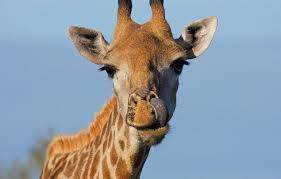

About
Purple Giraffe has been in the beauty scene since 2018 and offers low prices and weekly sales for high end brands. We are commited to the customer service we provide and exceeding our customers expectations. You can sign up today to become a member and get our weekly newsletters that comes with coupon codes that change weekly. You can help save giraffes as well by purchasing through Purple Giraffe because 5% of each purchase goes to the Giraffe Conservation Foundation (GCF) to help protect and save the giraffes around the world. With research and help from a chemist, Jacqueline Niemet began developing a small line of nontoxic skincare in 2017, called Purple Giraffe. She named it that after one of her first products, a hydrating face mask.
Testimonials

I love your makeup! I am using it all the time and it is the best line I know.
I am your biggest fan. -Christian Haremza
LOVE your Huda Beauty Palettes! Can't wait to try out some other products that you carry! Thanks for having amazing products with no harmful chemicals. -Josie Niemet
I love buying from Purle Giraffe, it really resonates with my values. It’s all natural and earth friendly. After using this range I feel fresh and my skin glows with health. My friends have all commented on my skin of late, which makes me feel good. -Liz Dupuis